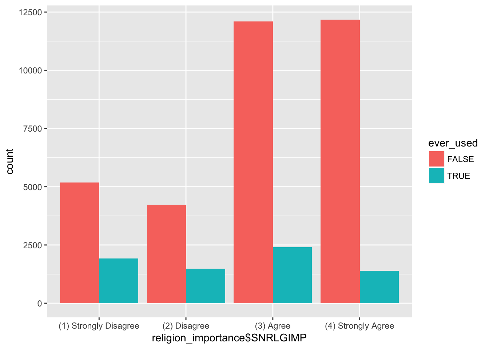

Hallucinogen Use
Brian Fry, Olja Busbaher, Beatriz Delclaux
Load and Filter Data
First, we load the full data set. Next, we define regular use of hallucinogens as 20 uses per year. Finally, we filter out the regular users and those who have never used hallucinogens from the data.
load("36361-0001-Data.rda")
library(tidyverse)
library(gridExtra)
HALLUSE <- filter(da36361.0001, LSD %in% c("(1) Yes","(2) No"))
AUINPYR <- filter(da36361.0001, AUINPYR %in% c("(1) Yes","(2) No"))
regular_use_criteria <- 20
non_regular_use_criteria <- 19
regular_users <- filter(da36361.0001, HALYRTOT >= regular_use_criteria)
nonregular_users <- filter(da36361.0001, HALYRTOT <= non_regular_use_criteria)
never_users <- filter(da36361.0001, is.na(LSD))Initial Visualizations
First, we created a visual representation showing the percent of respondents who have ever used hallucinogens.
HALLUSE$user_status <- "user"
never_users$user_status <- "never used"
HALLALL <- rbind (HALLUSE, never_users)
ggplot(HALLALL)+
geom_bar(aes(x=user_status, y=..count../sum(..count..),fill=user_status))+
scale_x_discrete(labels=c("Never Used", "Ever Users"))+
labs(title="Self-Reported Hallucinogen Use in the United States", x="User Category", y="Percentage")Second, we created a visual representation of how long ago those who have ever used hallucinogens last used hallucinogens. To do this, we had to filter from the HALLUSE data by the responses to the question “How long ago did you last use a hallucinogen?” Then, we used ggplot to display the data.
use_freq_data <- filter(HALLUSE, HALLUSE$HALLREC %in% c("(03) More than 12 months ago", "(02) More than 30 days ago but within the past 12 mos", "(01) Within the past 30 days"))
ggplot(use_freq_data)+geom_bar(aes(use_freq_data$HALLREC))+coord_flip()+labs(title ="Among those who have ever used\n hallucinogens, how long has it\n been since they last used them?",x="Time Since Last Used", y = "Frequency")Third, we made a chart which displays the answer to the question “What percent of survey respondents are currently regular users?” In answering this question, we defined regular user as one who uses hallucinogens 20 dyas or more per year.
current_use_criteria <-filter(da36361.0001, HALLREC %in% c("(01) Within the past 30 days","(02) More than 30 days ago but within the past 12 mos"))
current_use_criteria <- mutate(current_use_criteria, regular_use = HALYRTOT >= regular_use_criteria)
plotbar <- ggplot(current_use_criteria)+
geom_bar(aes(x=0), fill="red")+
geom_bar(data=regular_users, aes(x=1), fill="blue")+
scale_x_continuous(breaks=c(0,1),labels=c("Not Regular", "Regular Users"))+
labs(title="Currently Regular Users", x="User Category", y="Count")
plotpie <- ggplot(filter(current_use_criteria,!is.na(regular_use)))+geom_bar(aes(x=1, fill=regular_use))+coord_polar(theta="y")
grid.arrange(plotbar, plotpie)
Part A
Here we create a histogram showing how often regular users of hallucinogens use hallucinogens as shown by days per year that the user uses hallucinogens.
days_used <- as.data.frame(regular_users$HALYRTOT)
ggplot(data=regular_users, aes(x=days_used)) +
geom_histogram(breaks=seq(20, 365, by=10))## Don't know how to automatically pick scale for object of type data.frame. Defaulting to continuous.Part B
Here we compare the usage profiles of those who began hallucinogen use early vs. those who began late. We defined the cut-off age for early to late as 21 years old. We decided to make a layered histogram contrasting regular users who started using hallucinogens early, before 21 years old, and those who started late, after 21 years old.
early_use_criteria <-21
early_user <- filter(regular_users, HALLAGE < early_use_criteria)
late_users <-filter(regular_users, HALLAGE >= early_use_criteria)
days_used_early <-as.data.frame(early_user$HALYRTOT)
days_used_late <-as.data.frame(late_users$HALYRTOT)
ggplot()+
geom_histogram(data=early_user, aes(x=days_used_early, fill="Early Users"), breaks=seq(20, 365, by=10))+
geom_histogram(data=late_users, aes(x=days_used_late, fill="Late Users"), breaks=seq(20, 365, by=10))+
labs(title = "Days Hallucinogens Used Per Year, by Early and Late Users", x = "Days Hallucinogen Used", y = "Days")+
scale_fill_manual(name="User Status", values = c("Early Users" = "green", "Late Users" = "red"), labels=c("Early Users", "Late Users"))## Don't know how to automatically pick scale for object of type data.frame. Defaulting to continuous.Part C
(b) Hallucinogen user status compared to the response to the question “Have you ever been treated for alcohol or drug abuse?”
- Sustance treatment status as the independent variable.
In this section, we decided to make a stacked bar chart portraying the people who have received substance treatment for alcohol or drug use in the United States given they were never users, non regular users and regular users.
SUBTRT <- filter(da36361.0001, TXEVER %in% c("(1) Yes","(2) No"))
modified_data2 <- mutate(HALLUSE,
treatment_status = ifelse(TXEVER=="(1) Yes", "received substance treatment","never received"))
ggplot(filter(combined_data,!is.na(TXEVER))) +
geom_bar(aes(x=user_status,fill=TXEVER),position="fill")+
scale_x_discrete(labels=c("Never Users", "Non Regular Users", "Regular Users"))+
scale_fill_brewer(name="Substance Treatment", palette="Dark2",labels=c("Yes","No"))+
labs(title="People who have received drug or alcohol treament in the United States", x="User Category", y="Proportional Frequency")
- This visulization displays the same comparison as the previous but with user status as the independent variable.
ggplot(filter(combined_data, !is.na(TXEVER))) +
geom_bar(aes(x=TXEVER,fill=user_status),position="fill")+
scale_x_discrete(labels=c("Received Treatment", "Never Received"))+
scale_fill_brewer(name="User Status", palette="Dark2",labels=c("Never","Non-Regular", "Regular"))+
labs(title="People who have received drug or alcohol treament in the United States", x="Treatment Status", y="Proportional Frequency")- This visualization displays the same comparioson as the last two but in the form of two pie charts.
received <-filter(combined_data, TXEVER == "(1) Yes")
notreceived <- filter(combined_data, TXEVER == "(2) No")
plot1 <- ggplot(received) + geom_bar(aes(x=1,fill=user_status)) + coord_polar(theta="y")+labs(title="People who have received alcohol/drug treatment in the United States")
plot2 <- ggplot(notreceived) + geom_bar(aes(x=1, fill=user_status)) + coord_polar(theta="y") +labs(title="People who have not received drug/alcohol treatment in the United States")
grid.arrange(plot1, plot2)(c) Hallucinogen use compared to the response to the question “How important are your religious beliefs to you?”
- In this first visualization, the response to the religious belief question is the independent variable while the user status (ever used or never used hallucinogens) is the dependent variable.
da36361.0001 <- mutate(da36361.0001, ever_used = LSD %in% c("(1) Yes","(2) No"))
religion_importance <- filter(da36361.0001, SNRLGIMP %in% c("(1) Strongly Disagree", "(2) Disagree", "(3) Agree", "(4) Strongly Agree"))
ggplot(religion_importance, aes(x=religion_importance$SNRLGIMP, fill=ever_used))+geom_bar(position="dodge")
- In the second visualization, the user status is the indepent variable while the response to the religious belief question is the dependent variable.
ggplot(religion_importance, aes(x=religion_importance$ever_used, fill=religion_importance$SNRLGIMP))+geom_bar(position = "fill")- Finally, I will also make two pie charts, one for those who regularly use hallucinogens and one for those who have never, displaying the internal break down of the answer to the question about religious beliefs.
# This one shows the regular user breakdown
reg_relig <- filter(regular_users, SNRLGIMP %in% c("(1) Strongly Disagree", "(2) Disagree", "(3) Agree", "(4) Strongly Agree"))
g1 <- ggplot(reg_relig)+geom_bar(aes(x=1, fill=reg_relig$SNRLGIMP))+coord_polar(theta="y")
# This one shows the never users breakdown
never_relig <- filter(never_users, SNRLGIMP %in% c("(1) Strongly Disagree", "(2) Disagree", "(3) Agree", "(4) Strongly Agree"))
g2<- ggplot(never_relig)+geom_bar(aes(x=1, fill=never_relig$SNRLGIMP))+coord_polar(theta="y")
grid.arrange(g1, g2)